Robotic Manipulation Policy Learning
Demystifying Action Space Design for Robotic Manipulation Policies
*Equal contribution · 1Institute for AI Industry Research, Tsinghua University · 2Shanghai AI Lab · 3Peking University
Motivation
Action Space Design Has Not Reached Consensus
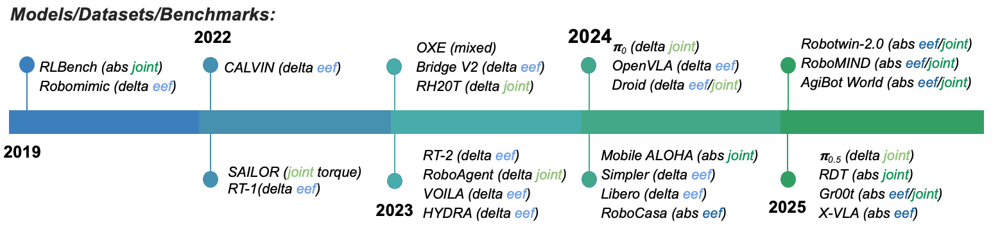
Action space specification is a critical design choice in imitation-based robotic manipulation policy learning. The chosen action space fundamentally shapes the optimization landscape and learning dynamics of robotic policies.
Because action spaces are often selected using ad-hoc heuristics or legacy conventions, their role remains unclear. We conduct a large-scale empirical study and decompose action design along two key dimensions.
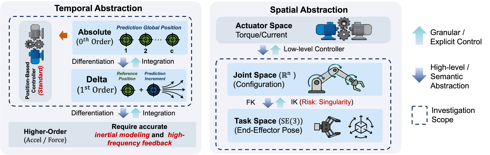
Experiment Setup
A Systematic Testbed for Action Representation Choices
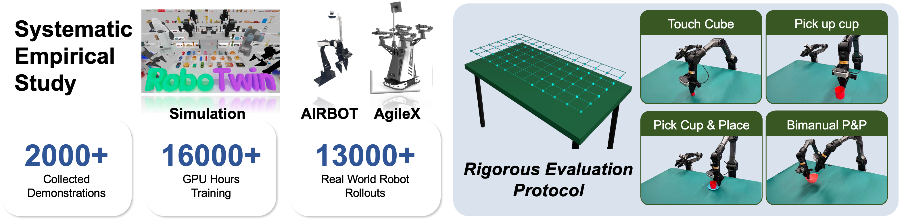
Preliminary
Implementation Nuances Are Decisive
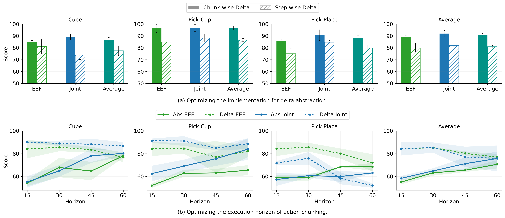
Chunk-wise delta is fundamentally superior to step-wise delta.
Optimal horizons are critical and abstraction-dependent: delta requires shorter windows while absolute thrives with longer horizons.
Overall Takeaways
Delta, Joint-Space, and Task-Space Strengths Depend on Regime
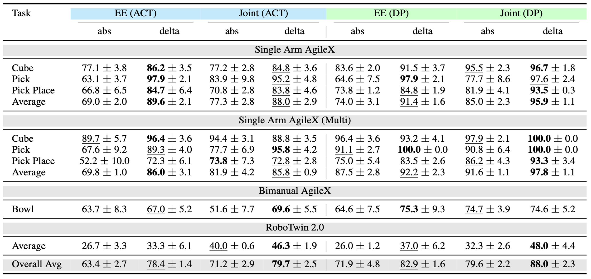
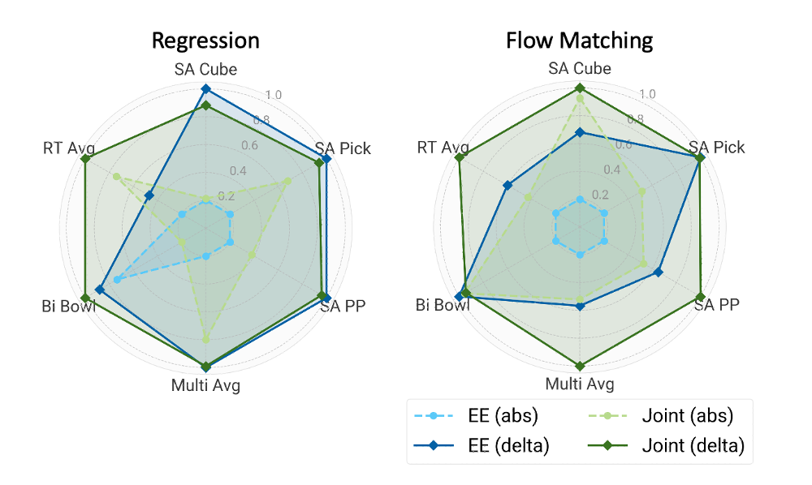
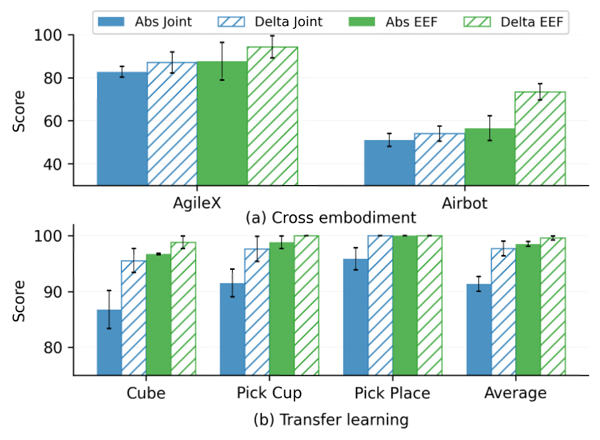
The superiority of delta actions remains consistent across diverse learning regimes.
Joint-space actions benefit exceptionally from stronger modeling capacity and extensive training.
Task-space representations show a pronounced advantage in generalized settings such as cross embodiment and transfer learning.
Scaling Experiments
Modern Backbones Amplify Representation Effects
Delta actions serve as a superior temporal abstraction for modern policy backbones.
Joint-space control generally provides a robust spatial representation, particularly when paired with strong generative modeling.
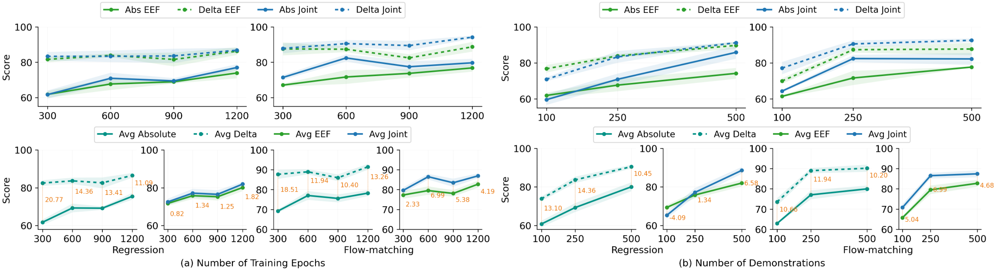
Sample Rollout Videos
Spatial Variation
Performance Uniformity Across Workspace Locations
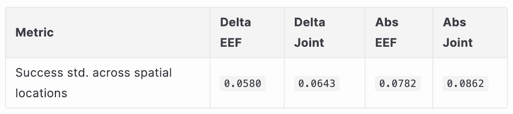
We partition the workspace into a 6x6 grid and evaluate each policy across spatial bins. For each action representation, we
compute success rate within each cell and summarize spatial heterogeneity by the standard deviation of per-cell success rates. Lower values
indicate more uniform performance across the workspace.
RoboTwin
Scaling Experiments on RoboTwin
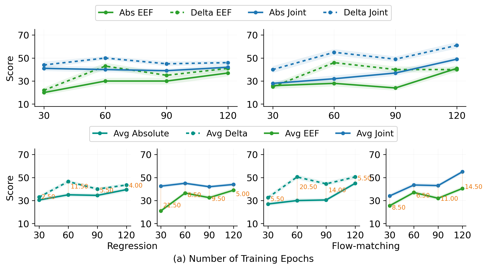
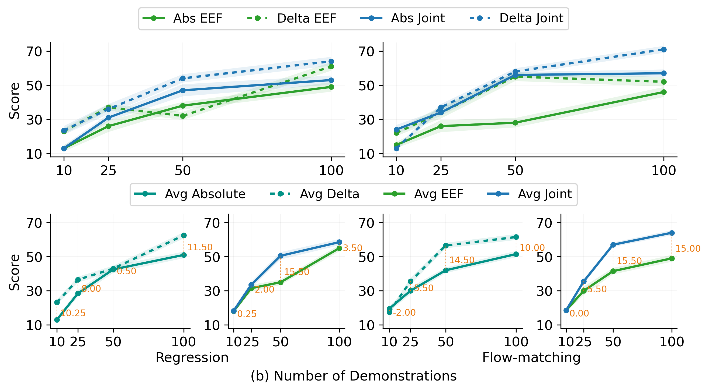
Sample Rollout Videos
Cloth Folding
Advanced VLA Experiments for Deformable Object Manipulation
We introduce advanced experiments on cloth folding as a representative deformable object manipulation task. The VLA model uses a VLM+DiT backbone and two evaluation protocols designed to stress-test adaptability.
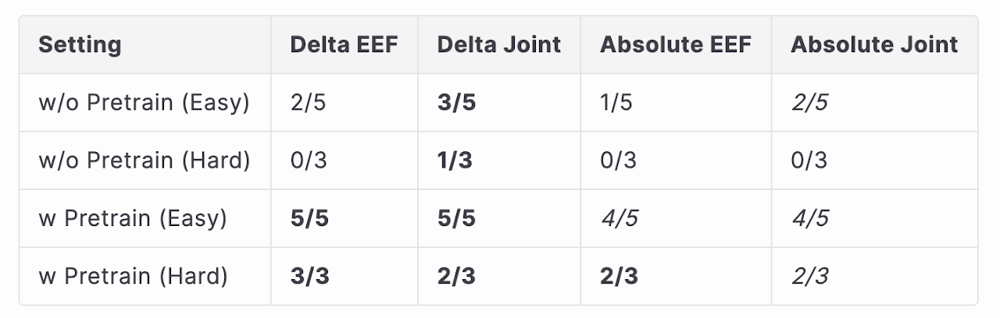